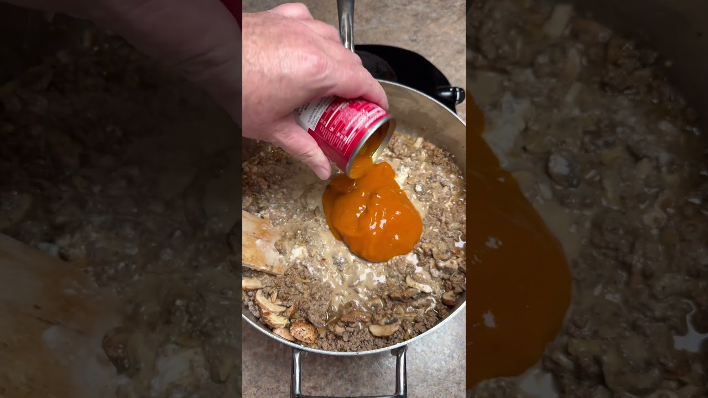

Pepper Belly Pete's ground-beef stroganoff — the noodles cook right in the sauce, and the "sauce" is cream cheese, canned soup, and zero apologies. One pot, thirty-five minutes, deeply uncool, extremely good.
Brown the ground beef over medium heat in a Dutch oven or deep pot. Drain the grease — there's a can of evaporated milk coming, trust the process.
Add the Worcestershire, Dijon, garlic powder, black pepper, cayenne, onion soup mix, mushrooms, and 1 cup of the broth. Simmer 5 minutes on medium-low, stirring now and then.
Stir in the cream cheese and golden mushroom soup until fully melted and smooth. No visible white streaks.
Add the uncooked noodles, evaporated milk, and the rest of the broth. Push the noodles under the liquid.
Cover and simmer on medium-low about 10 minutes, stirring occasionally, until the noodles are tender and the sauce clings. Stir once more and serve straight from the pot.